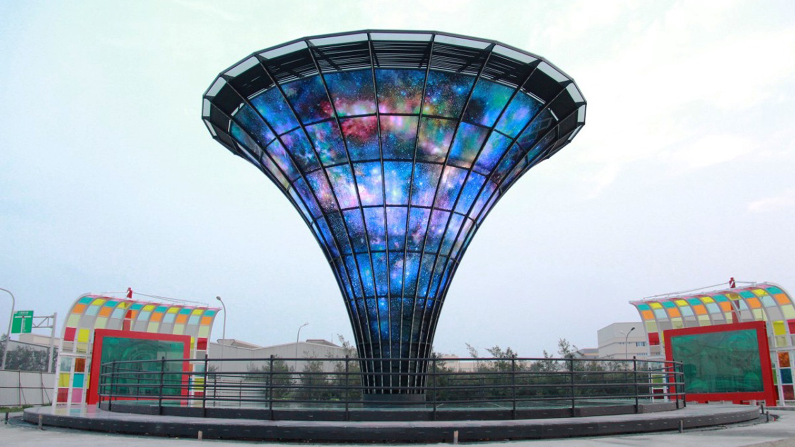

同步歡慶舉辦一系列活動，現場除了陶笛、排笛樂團表演，還邀請水墨畫學會舉行「看見台灣鐵道之美」水墨畫展，再加上日治時期的鐵道古物展，內容多元豐富。
Go somewhere


是台灣目前燈會展期最長的一次。除了水、陸、空花燈琳瑯滿目，來自國內外團體的精彩表演也為燈會添了許多樂趣。身為主辦單位的嘉義縣政府特別在燈會結束後公布3分鐘回顧影片，讓大家一起欣賞2018台灣燈會的精彩。
Go somewhere


設Kumamon熊本展示館，全球人氣指數破表的日本まモン部長，與樂團現身鹿港鎮台灣玻璃館，替館內國際產業交流熊本展示館代言，人氣搶搶滾。
Go somewhere Go somewhereCopyright © 2019 福爾摩莎陶笛樂團 x 笛確非凡排笛樂團. All rights reserved.
site by GreenHouse Design